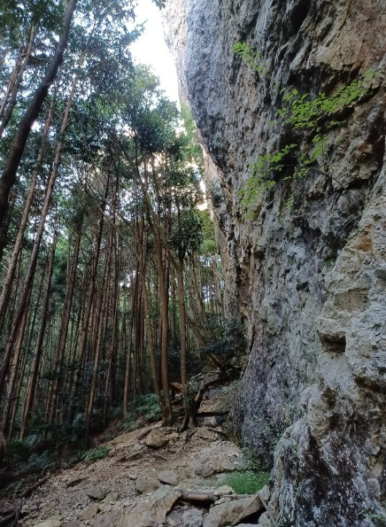

Sport Climbing

What is Sport Climbing
Sport climbing is a form of climbing that involves ascending climbing routes, called "routes" or "lines," with pre-fixed protection (including anchors, bolts), and the use of safety equipment, including ropes, harnesses, and quickdraws.
Equipment
- Shoes
- Personal Harness
- Ropes
- Belay Devices
- Quickdraws
How to Start
- Pre-requisites: Do you know how to lead climb? Lead belay? Because greater heights are involved, risk is magnified. You should be an experienced lead climber & belayer to climb independently. Otherwise, get a guide!
- Plan a trip: For independent climbers only - Decide on a crag to visit and some friends to go with. Remember to check the weather.
- Getting there: Get to area, hike a little if required, find the crag and your route
- Gear up: Get your equipment sorted out
- Climb!